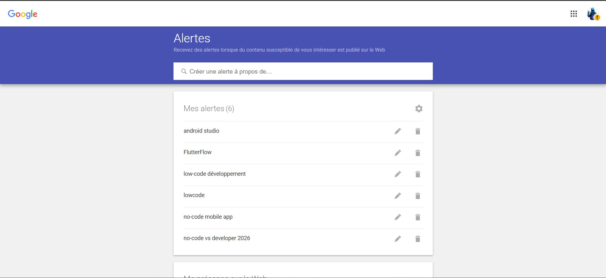
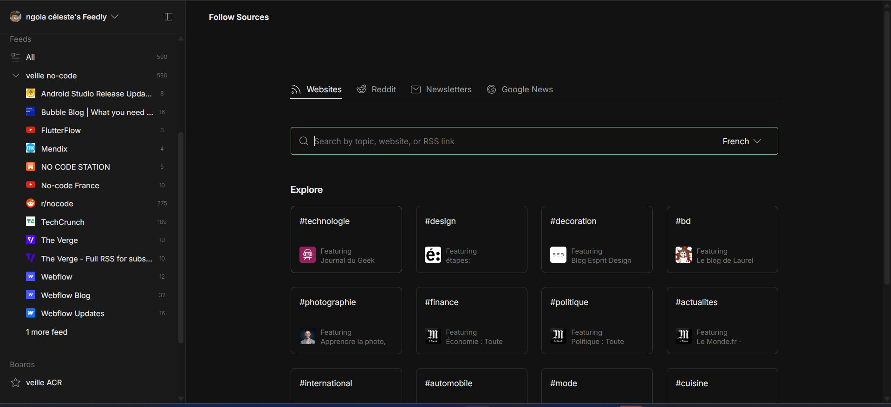
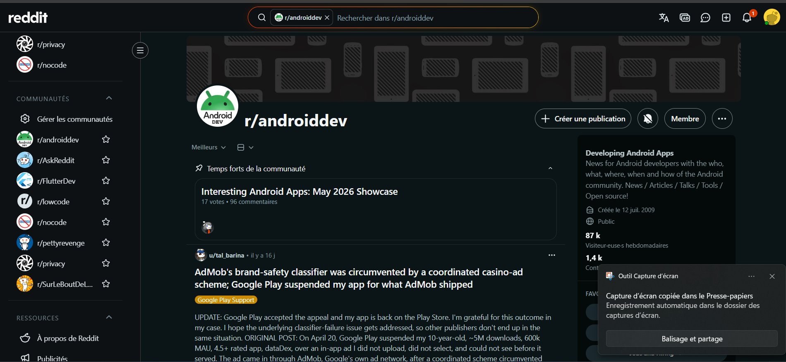
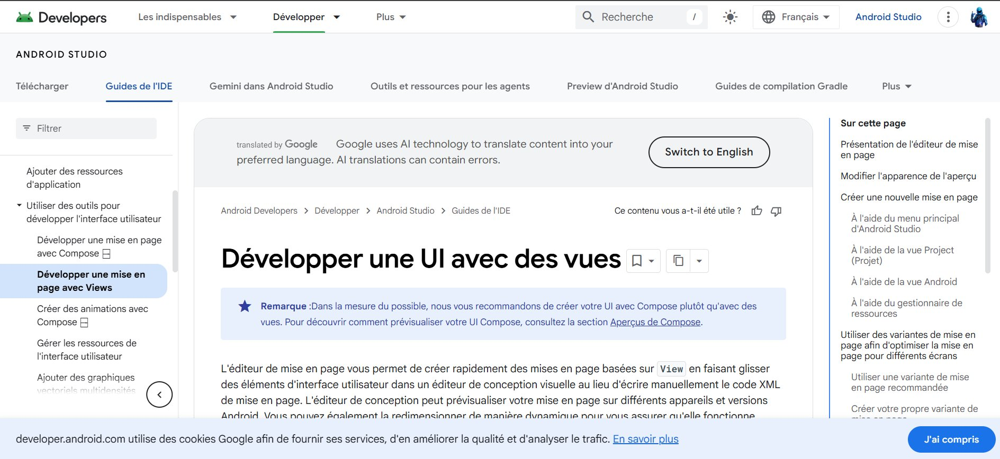

Des plateformes comme FlutterFlow permettent aujourd'hui de créer des applications Android sans écrire une seule ligne de code. Dans un marché où 75% des nouvelles apps seront développées en low-code d'ici fin 2026, quel est l'avenir du développeur mobile traditionnel ?
Low-code : approche de développement qui utilise des interfaces visuelles drag-and-drop pour construire les interfaces, tout en permettant d'écrire du code pour la logique métier. Exemple : Android Studio Layout Editor — on place les composants visuellement, le XML est généré automatiquement.
No-code : approche qui élimine totalement l'écriture de code. L'application entière est construite visuellement. Exemple : FlutterFlow — on dessine l'app et la plateforme génère le code Flutter derrière, sans que le développeur intervienne.
Ce sujet me touche directement. Durant mon stage de première année à l'ITIC Paris en été 2025, j'ai développé ITIC Companion sous Android Studio. En construisant mes interfaces avec le Layout Editor en drag-and-drop, j'utilisais sans le savoir un outil low-code. Toute la logique — authentification, QR code, classement — devait être codée en Java. C'est exactement la frontière floue entre low-code et full-code que cette veille explore.
J'utilise deux types de méthodes complémentaires pour rester informé : le push (je suis notifié automatiquement) et le pull (je consulte régulièrement des sources ciblées).
Alertes configurées sur alerts.google.com pour recevoir un email dès qu'un nouvel article est publié sur ces mots-clés :

Agrégateur RSS centralisant tous mes flux dans une collection dédiée "veille no-code". Abonnements actifs :

Consultation hebdomadaire des subreddits actifs sur le sujet :

Consultation régulière des sources primaires pour les aspects techniques :

Google vient de publier Android Studio Quail 2 Canary 2 sur le canal de développement. Cette mise à jour renforce l'intégration de Gemini AI dans l'IDE, permettant de générer des layouts XML en langage naturel — un pas supplémentaire vers le low-code assisté par IA directement dans Android Studio.
Gartner confirme dans son rapport 2026 que 75% des nouvelles applications seront développées avec des outils low-code ou no-code d'ici la fin de l'année, contre 40% en 2021. Le marché atteint 28,75 milliards de dollars et est projeté à 264 milliards en 2032 avec un CAGR de 32,2%.
FlutterFlow renforce sa position en permettant l'export complet du code Flutter généré, donnant aux développeurs la possibilité de reprendre la main sur le code produit par la plateforme. Cette évolution efface encore davantage la frontière entre no-code et développement traditionnel.
Bubble annonce l'intégration native de l'IA générative dans sa plateforme, permettant de créer des apps en décrivant leurs fonctionnalités en langage naturel. La convergence entre no-code et IA accélère — le développeur se repositionne comme architecte plutôt que codeur.
IDE officiel Google pour le développement Android. Le Layout Editor permet de construire les interfaces en drag-and-drop, générant du XML automatiquement. La logique reste en Java ou Kotlin. C'est l'outil que j'ai utilisé durant mon stage.
Plateforme no-code basée sur Flutter. On construit l'app entièrement visuellement, FlutterFlow génère le code Flutter derrière. Permet d'exporter le code complet et de publier sur Android et iOS.
Plateforme no-code orientée MVPs et apps mobiles simples. Plus accessible que FlutterFlow, idéale pour valider un concept rapidement. Plus d'1 million d'apps créées depuis sa création.
Outil no-code développé par le MIT, utilisé dans les écoles. Permet de créer des apps Android par blocs logiques visuels, sans écrire une ligne de code. Idéal pour l'initiation.
FlutterFlow, Adalo, MIT App Inventor. Accessible à quelqu'un qui ne sait pas coder. Idéal pour les MVPs, apps internes, prototypes rapides. Limité pour les fonctionnalités complexes.
Android Studio Layout Editor, OutSystems, Mendix. Nécessite des compétences de développement. Construction visuelle des interfaces, code pour la logique métier. C'est la catégorie d'Android Studio.
Android Studio en mode pur code, VS Code, IntelliJ. Nécessite une maîtrise complète du langage (Java, Kotlin, Swift). Performances optimales, personnalisation illimitée, projets complexes.
Une app FlutterFlow sera toujours moins optimisée qu'une app codée à la main. Les performances sont acceptables pour des apps simples, mais insuffisantes pour des apps critiques.
Si la plateforme ferme, change ses tarifs ou évolue, les apps créées peuvent être impactées. La dépendance à un fournisseur est un risque stratégique pour les projets long terme.
Les fonctionnalités très spécifiques sont impossibles sans sortir du no-code. Une app bancaire, médicale ou avec une logique métier complexe ne peut pas être faite en no-code pur.
Non, pas entièrement. Le no-code remplace les petits projets simples — MVPs, apps internes, prototypes. Mais il ne peut pas remplacer le développement complexe qui nécessite des performances, une sécurité avancée, ou une logique métier spécifique. Le développeur se repositionne : il devient architecte et superviseur des outils no-code, plutôt que simple exécutant du code. C'est une opportunité pour ceux qui s'y adaptent, une menace pour ceux qui ignorent cette évolution.
Maîtriser un outil no-code en plus du code classique est un avantage concurrentiel. Prototyper rapidement, livrer des MVPs, automatiser des tâches — le dev qui sait faire les deux est plus efficace.
Une PME qui a besoin d'une app simple de gestion interne n'a plus forcément besoin d'un développeur senior. Les outils no-code couvrent ces cas d'usage à moindre coût.
Mon expérience : pendant mon stage à l'ITIC, j'ai codé ITIC Companion en Java sous Android Studio. La partie interface était du low-code (Layout Editor), mais toute la logique — QR code, classement, notifications — nécessitait du vrai code. Aucun outil no-code n'aurait pu produire ce résultat. C'est la preuve concrète que le no-code a ses limites dès qu'on sort du cas d'usage simple.